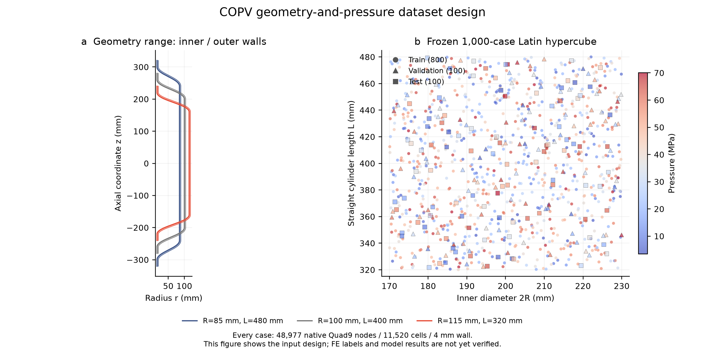

C06 / 第2周
COPV 四模型训练与对比
四模型独立测试及19组消融：完整曲线、平均/最差误差、场预测、PNG/PDF与审核记录
阶段第2周
开始日期2026-11-04
截止日期2026-11-06
状态已完成
前置任务M02、R06
预期交付物
四模型独立测试及19组消融：完整曲线、平均/最差误差、场预测、PNG/PDF与审核记录
验收 / review要点
20例TRAIN结果已归档；1000例使用同一800/100/100划分，验证集选模型、测试集独立评估。
前置任务
M02、R06
问题 / review记录
损失、几何特征与容量消融19/19组全部完成6000次真实更新及独立CPU、PDF视觉审核；固定20例训练拟合与独立100-test分别展示。 原56输入relative-FNO的TRAIN20全局与最差误差最均衡（984,668参数；U平均/最差2.025%/2.948%，VM 1.839%/2.364%）；masked log-TS3的U平均最低，为1.595%。独立test100中TS3的U平均最低，MGN的U最差及VM平均、最差误差最低。 所有配置均未达到每例U、VM同时≤1%；负VM保留原值。TRAIN20为单seed固定预算拟合，不能外推普遍因果或泛化。 用户授权的项目训练checkpoint已在本地与Sockeye清理并核验；预测、完整曲线、报告与审核证据保留。旧checkpoint SHA仅为历史证据，当前无权重下载。
2026-11-06 · 新模型与最终结果已交付
TRAIN20 参数匹配六方法（TS1 / TS2 / TS3 / GNOT / OFormer / FNO）与 1000 例 TS3 / MGN / FNO / GNOT 四方法比较全部完成。训练拟合与独立 test100 分开解释。
TRAIN20：TS1 平均 U 最低 1.5197%，OFormer 最差 U 最低 1.9883%。独立 test100：TS3 平均 U 最低 1.9533%，MGN 的最差 U 及平均 / 最差 VM 最低。没有配置满足所有例 U、VM 同时 ≤1%。
1000 例实验 · 已完成
1000 个不同几何与压力的 FE 样本及模型输入已生成、审核并放行，固定划分为 800 train / 100 validation / 100 test；每例 48,977 个原生节点、11,520 个 Quad9。 MGN、TS3、FNO、PointNet 编码 FNO 均完成 6000 次实际更新。下列为验证集选定 checkpoint 在独立 100-test 上的最终结果，原始逐例指标、曲线及场对照已发布。

设计 PDF · 已完成20例四模型结果
01
验收 / 总结 / 介绍
损失、几何特征与容量消融19/19组全部完成6000次真实更新及独立CPU、PDF视觉审核；固定20例训练拟合与独立100-test分别展示。 原56输入relative-FNO的TRAIN20全局与最差误差最均衡（984,668参数；U平均/最差2.025%/2.948%，VM 1.839%/2.364%）；masked log-TS3的U平均最低，为1.595%。独立test100中TS3的U平均最低，MGN的U最差及VM平均、最差误差最低。 所有配置均未达到每例U、VM同时≤1%；负VM保留原值。TRAIN20为单seed固定预算拟合，不能外推普遍因果或泛化。 用户授权的项目训练checkpoint已在本地与Sockeye清理并核验；预测、完整曲线、报告与审核证据保留。旧checkpoint SHA仅为历史证据，当前无权重下载。
02
问题 / review记录
任务完成表示固定训练预算与结果交付完成；四种方法均未达到全部测试样本 U、VM 各 ≤1%。负 VM 保留原值。结论限于本几何族和均匀等效壁线弹性 FE 模型，生产资格未放行。